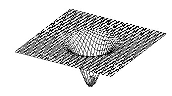
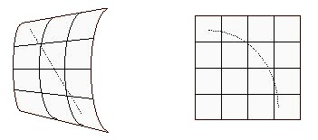

Mười năm sau thuyết Tương đối thu hẹp, Einstein tổng quát hóa nguyên tắc tương đương cho mọi hệ qui chiếu cho bất kỳ chuyển động nào.
Einstein đưa ra nguyên tắc tương đương: không phân biệt gia tốc (accélération) và sức hấp dẫn được (gravitation), có nghĩa là không có cuộc thí nghiệm nào cho phép ta quyết định nếu hệ thống quy chiếu mà ta đang ở đang bị ảnh hưởng của gia tốc -một tên lửa đang được phóng đi chẳng hạn- hay ở trong trọng trường của một vật thể ( le champ de pesanteur d'une masse ) - đến bề mặt của trái Ðất hay bất kỳ một thiên thể nào.
Ngược lại với không gian tuyệt đối của Newton, không gian của Einstein được dính liền với vật được chứa (le contenu). Không gian KHÔNG CÓ TRƯỚC mà chính sự hiện diện của khối lượng sẽ áp đặt hình học của nó và cũng từ đó thay đổi ngay cả cách hoạt động của vật thể và ánh sáng .
* Vũ trụ của Newton cứng cỏi được thay thế bằng espace-temps bốn chiều, và cong bởi sự hiện diện của khối lượng
* Lực hấp dẫn được thay thế bằng những đặc tính hình học của không gian: Vật thể làm cong espace-temps chung quanh nó.
* Ðể hiểu hiện tượng này, ta phải loại bỏ vũ trụ ba chiều của Newton mà dùng toán espace-temps bốn chiều.

* Trong khi Newton thấy một lực giữa hai vật thì Einstein chỉ còn thấy một đường cong espace-temps , và một thiên thể đang quay chung quanh một thiên thể khác được thấy như đang quay theo đường cong tạo ra bởi thiên thể này
Sự việc này cho ra những hậu quả nào?
Chúng ta đã thấy rõ ràng::Tia sáng bị lệch khi chạm một vật thể bởi vì nó đi theo những quỹ đạo tương ứng với con đường ngắn nhất (đường trắc địa, géodésique).

Khi đến gần một vật thể, thời gian đi chậm hơn. Hậu quả của hiệu ứng này là lực hấp dẫn redshift, ( redshift gravitationnel, xem từ vựng Thiên văn) , một sự xê dịch (décalage) đến những tần số thấp của một tia phát ra từ bề mặt của một vật thể.
Khi những tia sáng đi gần một vật thể, chúng bị trễ, do bởi chúng phải trải qua một khoảng cách lớn hơn (hiệu ứng Shapiro, xem tài liệu dưới đây)Tất cả những kết quả được được đo bằng thí nghiệm.
Một thử nghiệm khác liên quan tới sự đến sớm hơn của điểm périhélie của Mercure (périhélie là điểm trên một hành tinh hay sao chổi gần mặt trời nhất, điểm xa nhất gọi là aphélie). Hành tinh này cò một quỹ đạo rất lệch tâm (excentrique) do đó có sự thay đổi quan trọng về vận tốc. Thuyết tương đối tổng quát là thuyết duy nhất có thể cho phép giải thích tại sao cứ mỗi thế kỷ là điểm gần mặt trời của nó đến sớm hơn 43 giây sau khi đã khấu trừ ảnh hưởng của những hành tinh khác. (xem tài liệu dưới đây)